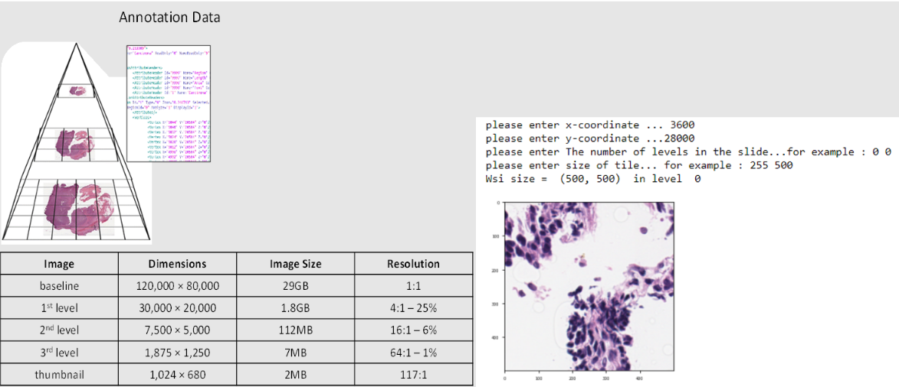
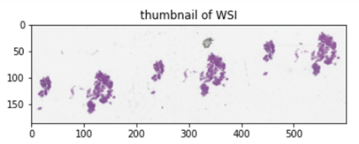
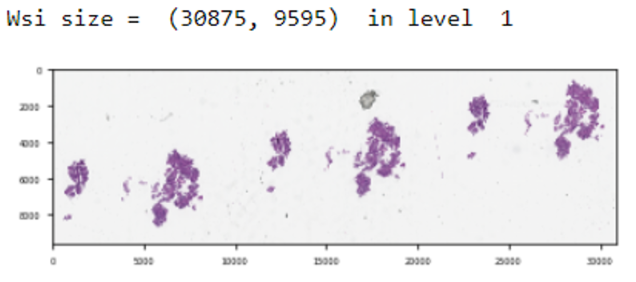
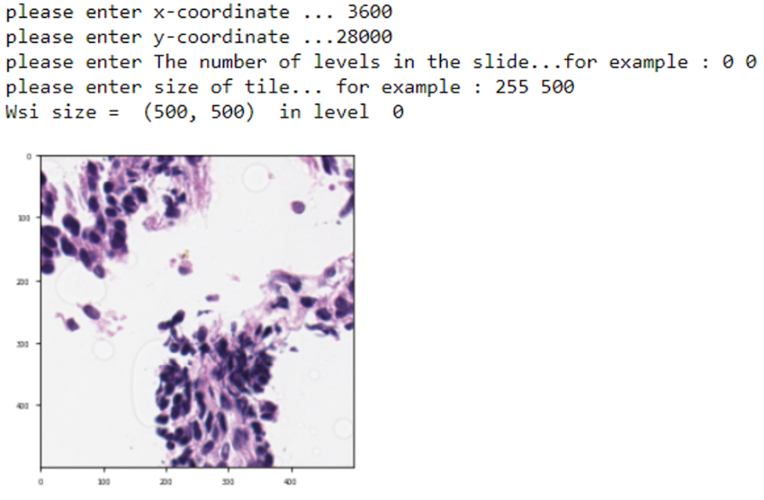
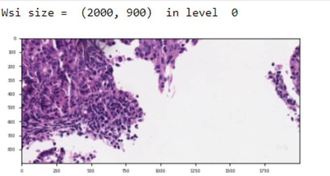

WSI Handler
WSI.readwsi module
Title: ValidPath Toolbox - WSI Handler module
Description: This is the WSI Handler module for the ValidPath toolbox. It is includes ReadWsi class and several methods
Classes: WSIReader
Methods: There are three methods in the ReadWSI module as follows:
Reader: wsi_obj = WSIReader.wsi_reader(path)
Region Extractor: WSIReader.extract_region(wsi_obj,location,level,size)
Extract Bounds: WSIReader.extract_bounds(wsi_obj,bounds,level)
- class WSI.readwsi.WSIReader[source]
Bases:
object- extract_bounds(bounds, level)[source]
This method process the WSIs and extract image.
- Parameters
- wsi_objobject
recieve the WSI object
- boundstuple
recieve the locations for extracting image from WSI
- levelint
WSI level to extract image from
- Returns
- IMGImage
Image data
- extract_region(location, level, size)[source]
This method process the WSIs and extract regions.
- Parameters
- wsi_objobject
recieve the WSI object
- Returns
- IMGImage
Image data
- wsi_reader()[source]
This code read a WSI and return the WSI object. This code can read the WSIs with the following formats: Aperio (.svs, .tif) Hamamatsu (.vms, .vmu, .ndpi) Leica (.scn) MIRAX (.mrxs) Philips (.tiff) Sakura (.svslide) Trestle (.tif) Ventana (.bif, .tif) Generic tiled TIFF (.tif)
- Parameters
- WSI_pathstring
The address to the WSI file.
- Returns
- wsi_objobject
WSI object
- wsi_xml_list()[source]
This code process the WSIs and XML list and returns these lists. Only WSI are included if there is an XML file with the same name.
- Parameters
- wsis_dirstring
Input Directory which has the original WSIs and XML files
- Returns
- WSIslist
List of included WSIs
- xml_list
List of XML files associated with included WSIs
About this module
This demonstration guides you through the process of utilizing ValidPath to interact with a whole slide image (WSI). The objective is to provide you with an understanding of how to load a WSI, extract relevant information, and subsequently retrieve WSI sub image. In the first part of this demo, we focus on loading a sample WSI. This involves utilizing ValidPath’s built-in functions to successfully read the image file. These functions are designed to handle the complexities of WSI files, which can be vast and multi-layered, ensuring that the image is loaded. After successfully loading the WSI, we proceed to extract key information about the image. This involves identifying and WSI characteristics such as the WSI’s dimensions, the number of image layers, and the magnification levels. By understanding these attributes, we can more effectively analyze the slide and extract relevant sections for further study. Let’s start with the environment configuration.
{kind=link}
Methods
There are three methods in the ReadWSI module as follows:
• Reader: wsi_obj = WSIReader.wsi_reader(path)
• Region Extractor: WSIReader.extract_region(wsi_obj,location,level,size)
• Extract Bounds: WSIReader.extract_bounds(wsi_obj,bounds,level)
In this section, we will go through each one of these methods and provided detailed instruction on how to use them.
Loading Required Packages
In this step, we will import several Python modules that are needed for our analysis.
import os
from WSI.readwsi import WSIReader
import matplotlib.pyplot as plt
import numpy as np
Note: If you got a dll error for reading openslide dll (‘libopenslide-0.dll’) you can set this line before import openslide:
import os
os.environ['path'] ="...\\openslide...\\bin"+";"+os.environ['path']
Read Whole Slide Image
In this section, we load a WSI and create the WSI object. This is enabled using the wsi_reader method in the WSIReader package.
WSIReader.wsi_reader(WSI_path: str) → WSI object
Loads a whole slide image and create the object file.
Parameters:
• WSI_path (str) – WSI file path.
Returns:
• WSI_object (object) – an object containing WSI file and its information.
Supported file formats: .SVS, .TIF, .NDPI
In order to use the wsi_reader, we will set up a directory which contains our WSI files, we will then create a list in Python and append WSI names in this list and load the WSI using the wsi_reader using an index.
WSIs_ = glob(dir_file+'/*.svs')
wsi_obj = WSIReader.wsi_reader(WSIs_[0])
After reading the WSI using the wsi_reader, we have an object which has the loaded WSI. To validate if the object is loaded correctly, we print the object and also print the available pyramid levels of the WSI using the “.level_dimensions” method.
print(wsi_obj)
print(wsi_obj.level_dimensions)
Thumbnail Visualization
To see a thumbnail of the WSI, we use the get_thumbnail method of WSIReader. We load the thumbnail as follows:
size_ = (600,300)
tile= wsi_obj.get_thumbnail(size=size_)
plt.imshow(tile)
plt.title("WSI thumbnail")
after running the code and provide the x and y size of the thumbnail and plot it, the output should look like this:
{kind=link}
Extract WSI Region
The next stage of this demonstration involves extracting image regions from the WSI. We achieve this through using ValidPath’s extract_region method. This is a critical step as it enables us to focus on specific areas of the slide, which can then be subjected to detailed analysis. .. code-block:: console
WSIReader. extract_region(WSI_Obj: object, Region_location: tuple, WSI_level: int, Region_size: tuple) → Image
Gets a WSI object and extract a region from the whole slide image.
Parameters:
• WSI_object (object) – an object containing WSI file and its information.
• Region_location (tuple) – x and y coordinate of the region location (top left)
• WSI_level (int) – the WSI pyramid level to extract the region
• Region_size (tuple) – the size of the region to be extracted
Returns:
• Image (array) – an array containing the extracted region from the WSI.
Let’s jump into the code by setting up plotting properties. Here we import matplotlib and set some options for plotting results to make the output looks better.
#Import and setting up packages
import matplotlib.pyplot as plt
import matplotlib as mpl
mpl.rcParams["figure.dpi"] = 70 # for high resolution figure in notebook
mpl.rcParams["figure.facecolor"] = "white" # To make sure text is visible in dark mode
plt.rcParams.update({"font.size": 5})
Now we call the reader from the WSI object and plot a small size WSI:
#Call the reader
location = (0,0) #location (tuple) – (x, y)
level =1 # level(int)
size = wsi_obj.level_dimensions[level]
file= WSIReader.extract_region(wsi_obj,location,level,size)
print("Wsi size = ",file.size ," in level ",level)
plt.imshow(np.asarray(file).astype(np.uint32), cmap='gray')
plt.show()
Output Example:
{kind=link}
Read Rectangle
Next, we will read a region of the whole slide image at a given location and size using the read_rect method. Running this code will ask the user to set the x and y coordinates (start points), the WSI pyramid level (set level to 0 for the best resolution), and the size of the area (in x and y directions).
location = (2500,8500)
level =0
size = (500,500)
file= WSIReader.extract_region(wsi_obj,location,level,size)
print("Wsi size = ",file.size ," in level ",level)
plt.imshow(np.asarray(file).astype(np.uint32), cmap='gray')
plt.show()
After running the code and entering the requested information, the code will plot the region of the WSI, similar to the following image.
{kind=link}
Extract bound
In this section, we will show how to read a region of the whole slide image within given bounds using the extract_bounds method. Bounds is a tuple of (top left, bottom left, top right, bottom right) of the region.
WSIReader.extract_bounds(WSI_Obj: object,Bounds: tuple, WSI_level: int) → Image
Gets an WSI object and extract a part of the whole slide image.
Parameters:
• WSI_Obj (object) – an object containing WSI file and its information
• Bounds (tuple) – contains the four locations (top left coordinate, bottom left coordinate, top right coordinate, bottom right coordinate)
• WSI_level (int) – the WSI pyramid level to extract the region
Returns:
• Image (array) – an array containing the extracted region from the WSI.
First Let’s check the dimensions of the WSI:
Print(wsi_obj.level_dimensions)
This will give you output similar to this which each paired numbers are the size of the image in different pyramid level of the WSI
Now, let’s set the start and end points and get the WSI region using the coordinates. Running the following code will ask the user to enter four values and will extract the specified WSI region and plot the result.
bounds = [3600, 28000, 4500, 30000]
level = 0
file= WSIReader.extract_bounds(wsi_obj,bounds,level)
print("Wsi size = ",file.size ," in level ",level)
file = np.array(file)
plt.imshow(np.asarray(file).astype(np.uint32), cmap='gray')
plt.show()
The output should look like this:
{kind=link}